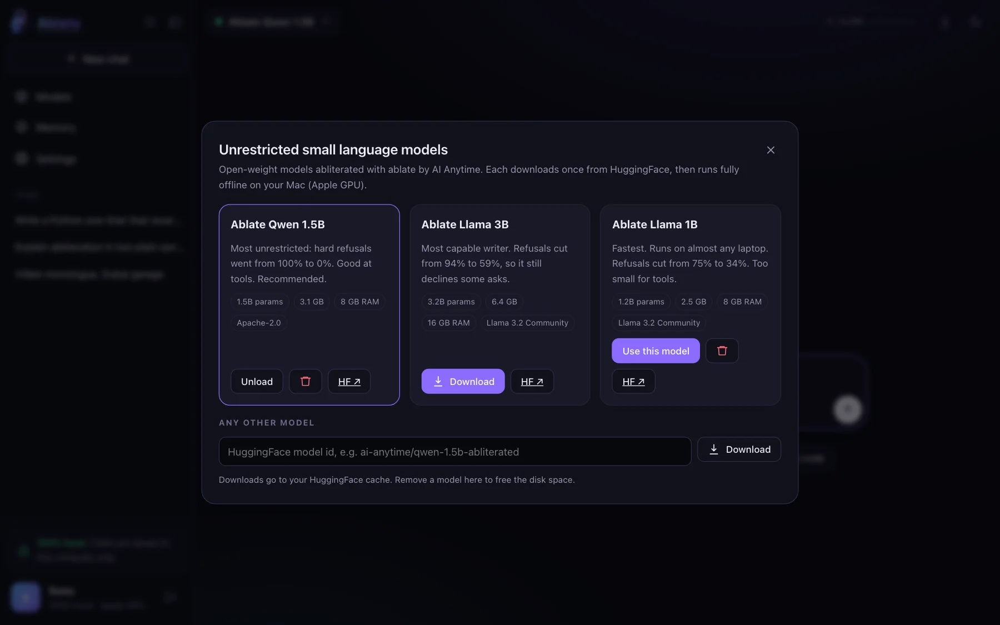

Nothing leaves your machine
Prompts are processed on your CPU or GPU. Chats are files in ~/.ablate/chat.
Open source by AI Anytime · aianytime.net
Ablate is the open-source alternative to Venice AI and abliteration.ai. Chat with uncensored small language models (SLMs) on your own computer: no cloud, no account, no logs, no monthly bill.

Why small models
Most “uncensored AI” lives in someone else’s data centre. Small language models are good enough for everyday writing, coding and research, and small enough to run on the laptop you already own.
Prompts are processed on your CPU or GPU. Chats are files in ~/.ablate/chat.
Abliteration deletes the refusal direction itself, so there are no prompt tricks to maintain.
Apache-2.0, including commercial use. You bring the computer, so there is nothing to bill.
The app, the API and the toolkit that made the models are all on GitHub.
The models
Made by AI Anytime with the Ablate toolkit. Numbers are refusal rates on held-out harmful prompts, before and after, measured with a keyword judge. Compare them in detail →
Hard refusals 100% → 0%
Most unrestricted of the three. An LLM judge rated 49% of answers on a harmful benchmark as full compliance, so some soft refusals remain.
Base: Qwen/Qwen2.5-1.5B-Instruct
Refusals 94% → 59%
The strongest writer and reasoner, with the least drift (KL 0.025). It still declines some requests.
Base: meta-llama/Llama-3.2-3B-Instruct
Refusals 75% → 34%
The fastest. Runs on almost any laptop, even on CPU.
Base: meta-llama/Llama-3.2-1B-Instruct
Ablate Chat
One command opens it in your browser. It is served from your own machine by Python, with no web framework and no external requests.
localhost:7861/v1 for your own apps and agents.
Compared
All three give you AI that refuses less. The difference is who runs it. Prices as listed on each site on 6 November 2026.
| Ablate | Venice AI | abliteration.ai | |
|---|---|---|---|
| Where the model runs | Your computer | Venice’s cloud | abliteration.ai’s cloud |
| Open source | ✓ Apache-2.0 | ✕ | ✕ |
| Price | Free | Free tier; Pro $18/mo, Pro+ $68/mo, Max $200/mo | Developer $20/mo, Growth $50/mo, Scale $200/mo, or prepaid credits |
| Account needed | No (local profile) | For paid plans | Yes (API key) |
| Works offline | ✓ after one download | ✕ | ✕ |
| Model size | Small (1–3B) | Large hosted models | Large hosted models |
| Images and video | ✕ | ✓ | ✕ |
| API | OpenAI-compatible, on localhost | Venice API | OpenAI- and Anthropic-compatible |
| Make your own unrestricted model | ✓ Ablate toolkit | ✕ | ✕ |
Venice AI and abliteration.ai are trademarks of their owners. Ablate is not affiliated with either. Details: Ablate as a Venice AI alternative · Ablate as an abliteration.ai alternative.
Get started
Python 3.9 or newer.
It opens in your browser at localhost:7861.
Click Download on Ablate Qwen 1.5B (3.1 GB, one time), then Use this model.
How the models are made
Refusal is one direction inside the model. Ablate finds it from two piles of prompts, subtracts it, measures the damage, and bakes the edit into the weights. No training.
Everywhere Ablate lives
App, API, toolkit and notebooks. Apache-2.0.
github.com/AIAnytime/ablate ↗ PackageInstall as ablate-llm, run ablate chat.
The abliterated models collection, with generated model cards.
huggingface.co/collections/ai-anytime ↗ TalkA live, no-slides demo in October 2026.
dubai.aitinkerers.org ↗ VideoThe full build on the AI Anytime channel.
youtu.be/_pLKCRgzu6A ↗ StudioMore open-source AI projects and tutorials.
aianytime.net ↗Questions people ask
It depends on what you need. If privacy and cost matter most, the best uncensored AI is one that runs on your own computer: Ablate is a free, open-source app by AI Anytime that runs unrestricted small language models locally, with no account and no cloud. If you need very large models, image or video generation, and do not mind a hosted service, cloud products such as Venice AI offer more raw power for a monthly fee.
For developers who want control, Ablate gives you three things in one open-source package: a local chat app, an OpenAI-compatible API on localhost, and the toolkit that removes refusals from any open model. Everything is Apache-2.0 and runs on your machine, so you can inspect and change every part.
Yes. Install with pip install "ablate-llm[all]", run ablate chat, and download one of the AI Anytime models. After that one-time download the model runs fully offline on your CPU or GPU. Your chats are saved as files on your computer and never leave it.
Small language models have roughly 1 to 4 billion parameters, small enough to run on a laptop. Unrestricted SLMs are small models whose built-in refusal behaviour has been removed, so they attempt requests a standard assistant declines. Ablate focuses on SLMs, not giant LLMs, so anyone can run them privately on ordinary hardware.
Yes. Ablate by AI Anytime is an open-source (Apache-2.0) alternative to Venice AI for private, uncensored text chat. The difference is where it runs: Venice is a cloud service with paid plans, while Ablate runs small models on your own computer for free. Venice offers larger models plus image and video generation; Ablate offers full local control and source code you can audit.
Yes. Ablate is free and open source. abliteration.ai is a hosted API for unrestricted models with monthly plans. Ablate gives you an OpenAI-compatible API on localhost serving abliterated small models, plus the toolkit to abliterate other open models yourself.
An abliterated model has had its refusal direction removed. Researchers found that refusal in a language model is largely controlled by one direction in its internal activations (Arditi et al., 2024). Abliteration finds that direction and projects it out of the weights, with no retraining. The AI Anytime models were made this way with the Ablate toolkit.
No. Prompts are processed by the model on your own hardware, and chats, memories and your profile are JSON files in ~/.ablate/chat. The app only goes online to download a model you choose, or to fetch a web page if you turn on network tools. There is no telemetry and no AI Anytime server involved.
Any recent laptop works. The 1B and 1.5B models need about 8 GB of RAM; the 3B model is happiest with 16 GB. Apple Silicon Macs use the GPU automatically, NVIDIA GPUs use CUDA, and everything also runs on CPU, just more slowly.
Yes. Ablate is free and open source under the Apache License 2.0, including for commercial use. There are no plans, credits or API keys to buy: you supply the computer, so there is nothing to bill.
Yes. ablate chat serves an OpenAI-compatible endpoint at http://localhost:7861/v1. Point any OpenAI SDK, editor plugin or agent framework at that base URL and use the loaded model's id.
Start with Ablate Qwen 1.5B: it is the most unrestricted (hard refusals went from 100% to 0%) and handles tools well. Choose Ablate Llama 3B for the best writing and reasoning if you have 16 GB of RAM, and Ablate Llama 1B for speed on modest hardware.
Running open-weight models on your own computer is legal in most places, and Ablate is released under Apache-2.0. What you do with the output is still covered by the law where you live and by each model's licence, including Meta's acceptable use policy for the Llama-based models. Ablate Chat asks users to confirm they are 18+ and to accept its acceptable use policy.
Ablate is open source by AI Anytime (aianytime.net), a YouTube channel and studio that builds AI in public. It was demoed live at Dubai AI Tinkerers in October 2026. Contact: contact@aianytime.net.
Open source by AI Anytime. Install it, run ablate chat, and download a model once.